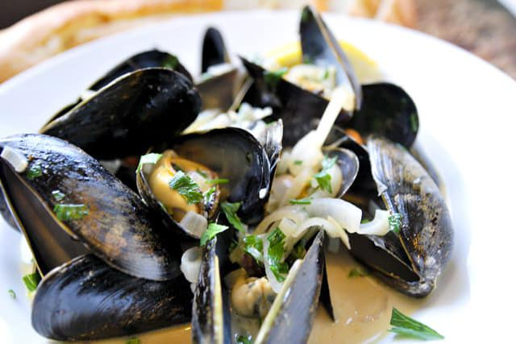

Back to Recipe
Steamed Mussels in a white wine cream sauce

A sophisticated dish that is supprisingly easy to do. Great for a mid week treat, or if you're trying to impress guests.
This recipe is for two, but very easily scales up, we're using a lovely crusty baguette, but can be served with chips for the
classic moules frites.
Prep time: Up to 30mins
Cook time:~20mins
Servers: 2
Ingredients
- Around a kilo of fresh live mussels
- 2 shalots, or a large white onion, which ever you prefer
- 2 garlic cloves
- 250ml dry white wine, it is better if this is room temperature
- 100ml double cream
- 2 large crsuty baguettes
- A handful of chopped fresh parsely
A tip on storing and preparing fresh mussels.
Mussels can be stored be stored for upto 3 days provided you do this correctly. Place them loose in a large bowl with a damp towel covering
them in the fridge. Discard any that don't close when touched, or smell fishy, they should smell like the sea/salty water.
Waste water may collect in the bottom of the bowl, discard and if the remoisten the towel if needed. To prepare, simply pull any beards,
left over rope from where they were grown, off.
Lets get cooking
- Heat a large pan with a little oil olive and a knob of butter, enough to cover the shalots you're about to chop, over
a medium heat. While the pan is warming chop your shalots and slice your garlic gloves.
- Gently fry your onions for a few mintues so the start to soften and then add your garlic.
- Once soft add in your wine and mussels, cover your pan, ideally with a lid that fits, if you don't have a lid foil will
work just fine, cook until most of the mussels are open.
- Reduce the heat and pour in your double cream, season, and add you parsely, gently simmer for a couple of minutes stirring
occassionally.
- Plate up! Serve with your crusty baguettes, best to laddle into a bowl not skimping on the sauce! It's a good idea to have
a larger empty bowl ready for all the shells.